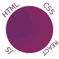

Webové stránky, ať už sebevíc robustní, nevydrží tlak času. Neaktualizované stránky jsou zkázou nejen zážitku vašich zákazníků, ale i pozici ve vyhledávači.
Internet se rozvíjí a rozvíjet se bude, proto je potřeba na stránku implementovat nejmodernější technologie. Také prohlížeče nezaostávají, jejich změny jsou častější než si možná uvědomujeme.

Zálohovat a zálohovat .
Každá aktualizace sebou nese nějakou dávku rizika. Může se pokazit spoustu věcí, jelikož aktualizace je možná složitější než se na první pohled může zdát.
Nikdy nezačínáme s aktualizací bez toho, aby jsme si udělali pořádnou zálohu. Samozřejmě po předělání vše pořádně zkontrolujeme.
Jak to u nás chodí
1
CENA
Pokud si již vyberete, že chcete správu webu, předpokládáme, že bude dlouhodobá a to v měsíčních nebo ročních intervalech.
2
TVORBA
Vytvoříme novou webovou stránku podle předem schválených požadavků.
3
VÝBĚR
U většiny klientů je vhodná rošní správa, která pokryje všechny novinky. Avšak možnosí je i měsíční, více intenzivní správa.
4
ROK? TO UŽ
Po roce se na web podíváme, doděláme, co je potřeba a zazálohujeme. A za rok se zase vidíme.
5
ŮDRŽBA
Pravidelná údržba zaručí rychlí chod webu, který poběží na nejmodernějších technologiích.
6
NA ZAVOLANOU
Pokud se něco s vaším webem pokazí, nabízíme naše služby až 1x za měsíc, aby vše šlapalo tak, jak má.
Hosting .
Většina našich webových stránek je zpravováná námy, avšak vlastníkem je vždy klient. Díky přístupu do hostingu nejenže dostaneme více svobody při zasahování do věcí, ale jsme schopni stránku aktualizovat a komunikovat s podporou.
Pokud si avšak náš klient přeje, aby si web spravoval sám, přenecháme mu ho se vším všudy, avšak za radou si k nám vždy zajít může.
Jednoduchý a ladný proces .
Opravdu nechceme, aby jste s námi měli příliš mnoho práce, proto se snažíme udělat celý proces pro Vás co nejjednodušší. Zasílání dosavadního pokroku, dokumentace všeho možného a hlavně rychlá komunikace, to jsou zásady, na kterých si zakládáme.